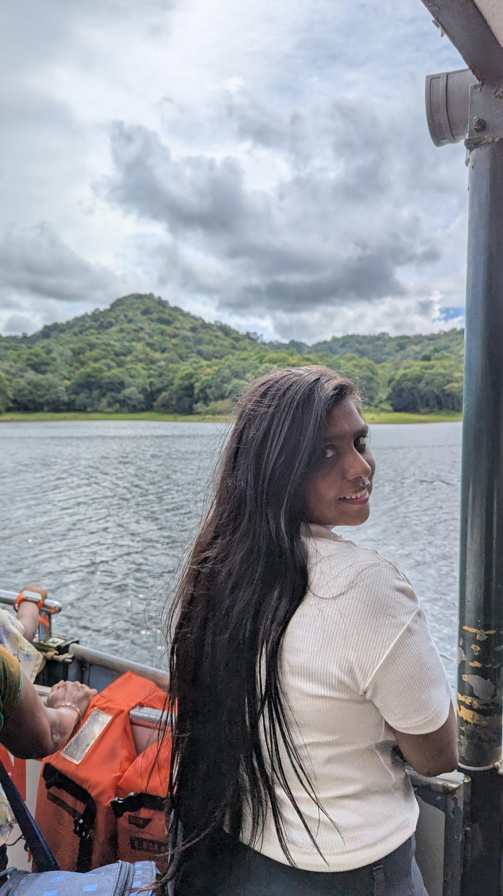
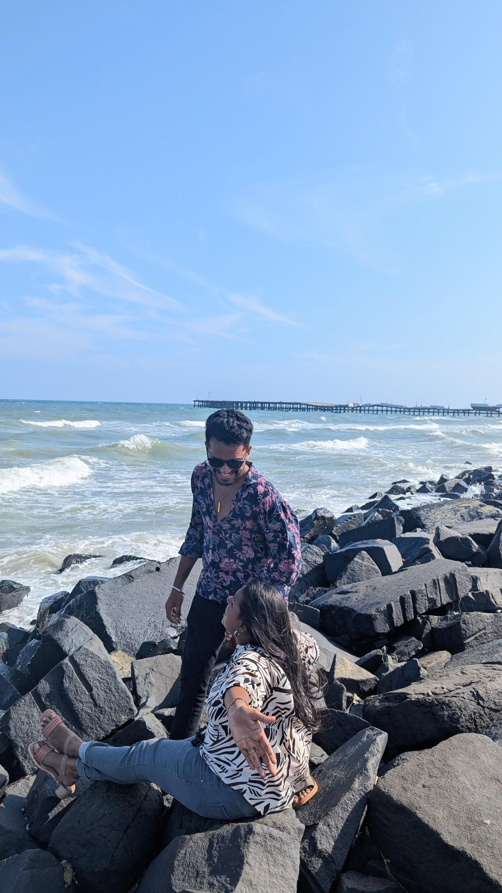
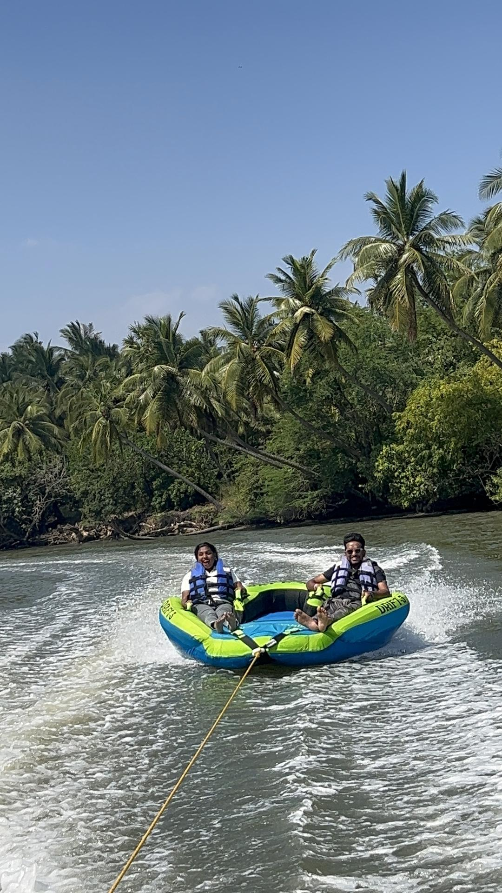

Chapter Two · Tide
The Beach That Never Ended
Salt in the air, your hand finding mine under the water, and absolutely nowhere else we needed to be.
Add Your Photos
Sandy Feet, Full Hearts
Tap any frame below to drop in a photo from that day.



“
The ocean is vast, but it still isn't as deep as the way I feel about you.
— written in the sand, washed away, true foreverWe said we'd stay an hour and stayed until the sky turned the colour of your favourite lipstick. You built a lopsided sandcastle and named it after us, the waves took it back within minutes, and you just shrugged and said "we'll build a better one next time." I think about that a lot — how you never seem to mourn what the tide takes, because you already know there's always a next time, as long as it's with me.